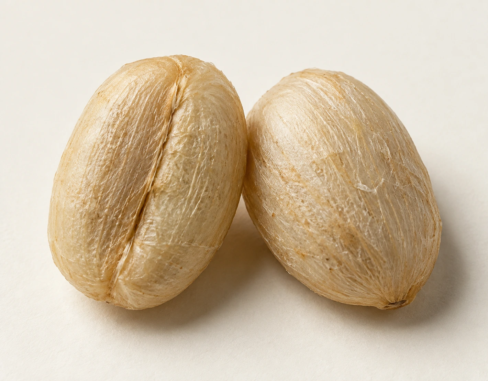
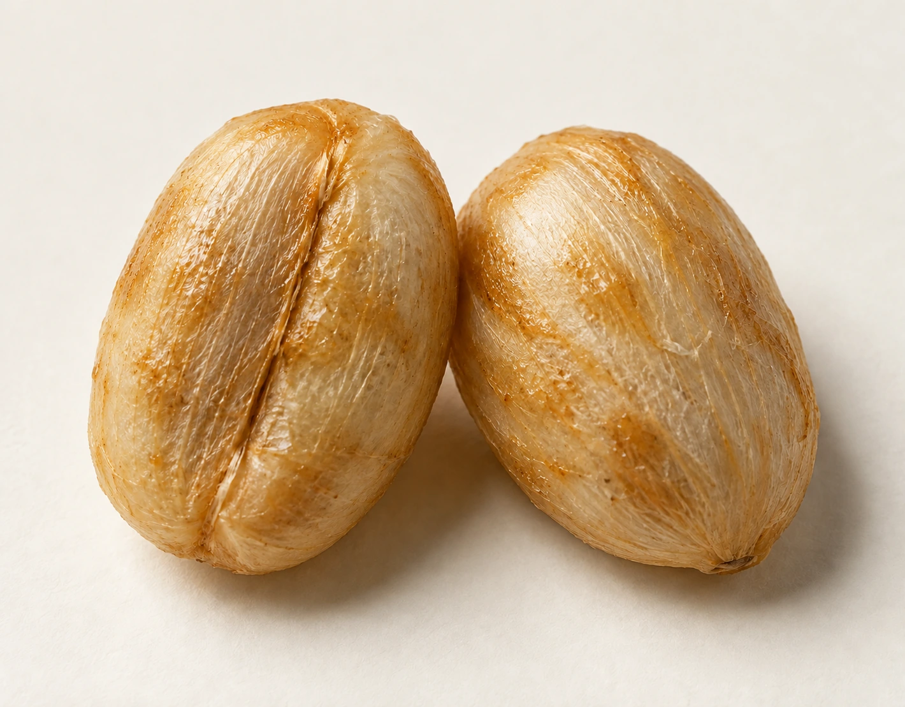
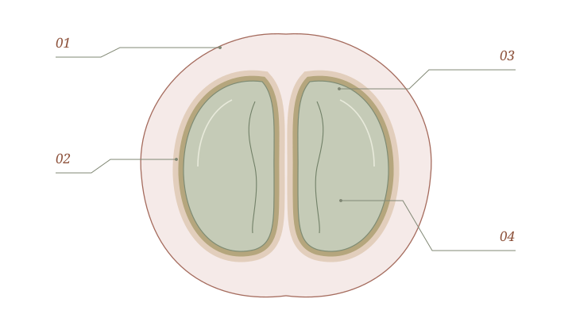

日晒
整果进入干燥

水洗
去皮、去黏液后干燥

蜜处理
保留一定黏液后干燥
01开始干燥时选择一种处理路线 / AT THE SAME MOMENT
让果实，陪着种子一起干燥。
果皮、果肉和黏液仍在。种子留在果实里面，等干燥完成后，再去除外部组织。

三条替代路线，比较时点相同；它们不构成先后顺序。物件：AI 生成视觉示意 · 具体外观与工艺会有差异
整果进入干燥

去皮、去黏液后干燥

保留一定黏液后干燥
01开始干燥时选择一种处理路线 / AT THE SAME MOMENT
果皮、果肉和黏液仍在。种子留在果实里面，等干燥完成后，再去除外部组织。
